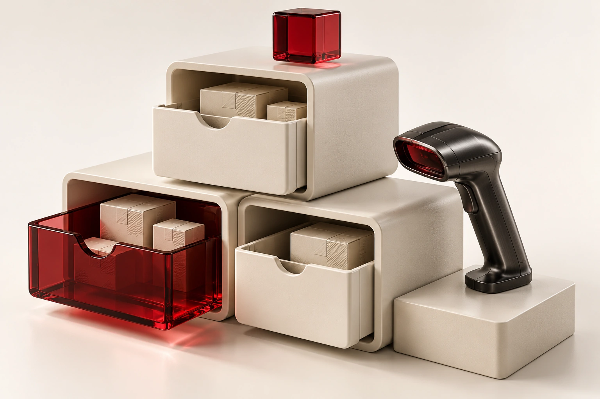

El reto
Separar responsabilidades y controlar entradas incorrectas al trabajar con información estructurada.
Ordenar los datos empieza por ordenar el código.

Ilustración conceptual 3D · consulta el alcance del proyecto a continuación.
Separar responsabilidades y controlar entradas incorrectas al trabajar con información estructurada.
Organizar clases y paquetes con menús de operación, lectura de archivos, tratamiento de excepciones y exportaciones.
Clases y módulos con responsabilidades diferenciadas.
Control de entradas y manejo de excepciones.
Lectura y procesamiento de información estructurada.
Menús y exportación de resultados.
La portada de consola es una representación del flujo. Este portafolio no incluye ni ejecuta la aplicación Java.
¿Tienes una idea parecida?
Conversemos ↗